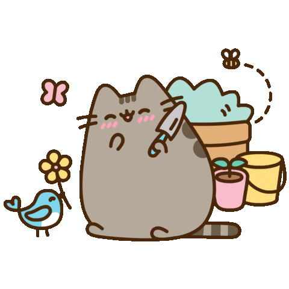

Hello.
I was a cashier in a bank, but currently I'm learning computer languages.
My Skills.

Painting
I paint to escape reality sometimes. Filling a blank white page with colors and giving it some meaning is really cool. Mostly I like to draw some characters from my favorite Animes, but I'm not professional.

Gardening
I love flowers and cactus. It takes patients to grow a plant from seed, but watching a life grow is really beautiful. Also, growing plants helps you master the skill of taking care of things, it teaches you about responsibility. Gardening is a way to connect with nature.
Get In Touch
Besides painting and gardening, I can also work as a developer
If you find my profile interesting click on "CONTACT ME" for my email address..
CONTACT ME